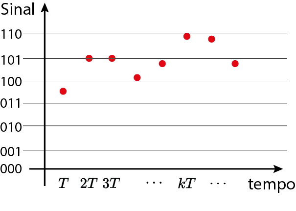
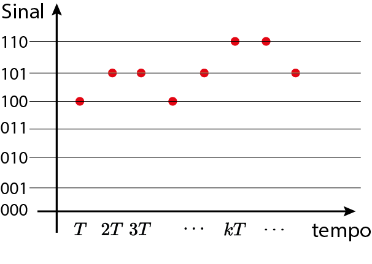

Aula 1:
Introdução à disciplina de Processamento Digital de Sinais (PDS)
SEL0343
24 de fevereiro de 2026


Amostragem

Sinal em tempo discreto

Quantização


Degrau unitário
$u[k] = \begin{cases} 1, & k\geq 0 \\ 0, & k< 0 \end{cases}$